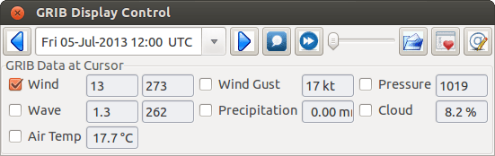
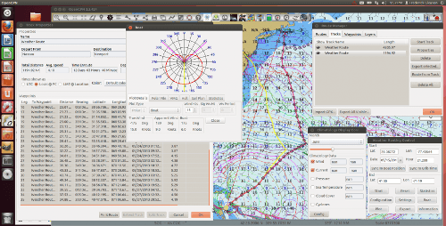

This plugin creates optimized weather routes based on grib files and performance data (polar data) for the boat, as well as conditions set for time, where to start and where to finish.
- When downloaded, without changing anything, except downloading a recent grib file, defining two weather_routing waypoints (hover mouse at location, right click pick weatherrouting position), create a new Configuration under Weather_routing, select Edit Configuration and add one of the waypoints to the start and the other to the end waypoint, click Grib Time, close Configuration, and Compute the new configuration and it will probably create isochrones and a new weather route.
- Use the Grib Plugin and recently downloaded grib files for completing grib predictive routing (1-8 days).
- Use the Climatology Plugin to find and plan long term cruising routes, (most useful in prevailing winds areas).
- Use both grib and climatology data to get current data if the grib does not contain it, or to use climatology to avoid areas of cyclones.
- It is also possible to use both grib and climatology data, allowing the grib's route to be extended past the time/range of the grib. This builds on the assumption that the current general weather pattern is “average”, otherwise the result may be totally misleading. If you have followed the weather for a while and know the current weather pattern, through 500 mb patterns etc, this is more useful for actual routing than just using a long term average like climatology alone.

Create a New Route (Edit > New)
- Start the plugin by clicking it's icon on the toolbar.
start and end points can be set by hovering cursor at a location, and right mouse click, select “Weather Route Position”
- Start Grib (with fresh grib file) and/or Climatology Plugins, and set the time to the desired starting time.
- Select Configuration → New to create a new weather route configuration.
- The Weather Routing Configuration Dialog should be shown. Set the start and end positions and hit “grib time” to set the time. Be sure to edit the boat to correctly configure it, see below.
- Beginners should first try a simple route, with starting point and end point, 5 degree steps, and possibly a 3 hour time interval until they see it is working. The time interval depends on the speed of the boat and distance traveled.
- From the first Weather Routing Window, select Configuration → Compute.

Configuration Window (Edit > Configuration)
Provides setup flexibility for various factors:
- Start location, date and time. End location.
- Step duration for isochrones in hours and minutes (12 hours for long routes, 1 hour for shorter)
- Degree Steps (5 degree steps is faster than 1 degree steps)
- Boat Performance based on editing boat specifications or based on a polar data file.
- Set constraints on various factors such as max wind, swell, waves, latitude, max diverted course etc…
- Set data source Grib or Climatology, greys if not available.
- Set options like detect land, currents, inverted regiions, anchoring.
- Routes can be Edited (created, selected, renamed, reset and exported.)

Grib or Climatology Data is Required
Provided by use of the Grib_plugin and a fresh Grib file, or by the Climatology_plugin with the separate Climatology data installed in the proper directory.

When the weather route is displayed, grib and climatology calculations use different color schemes. In the route below, on the left, using only climatology because we are outside the grib area. In the middle, the computation is based on grib data, and toward the end of the passage, the grib data does not cover this time so again climatology data is used. If the transition from grib to climatology is not uniform, then the climatology data is not as reliable in that situation.

Route Manager
The Route Manager can be used for listing the weather route. Right click a weather route and pick “Properties”. Also weather routing can be exported.
Warning about Data:
Weather_routing is only as good as the data provided by the Grib plugin and the Climatology plugin.
- Grib plugin: Depends on recent download grib files from Noaa and other sources. Downloaded Grib predicitions can change significantly over several days. The longer the grib prediction is, the less reliable the grib can be.
- Climatology plugin: Can be used for analyzing long crusing routes through various seasons and constraints, but does not take into account the current weather conditions which often vary significantly from the 30 year average, especially outside of prevailing wind areas.
- These planning tools may be helpful, but should be taken with a healthy “grain of salt” as any good sailor (who looks out to the horizon) should know.
Warning about Weather Routes:
The weather routes created may not consider or “see” normal navigation considerations and issues, therefore every route should be checked very carefully for navigation markers, shallow depths, bad currents, rocks, land and other obstacles and hazards.
Messages in Configuration Window
In the Config Window after “Compute” there will be a message placed to the right of the Configuration.
“Complete” affirms that the computations completed. “Fail” indicates they did not and that some setup parameter may be out of range. The failure messages have been made to be more descriptive to help.
If your polar doesn't include boat speeds above a windspeed that the grib tries to use, it will fail to route.
Some other Examples:
Nassau to Newport, showing other windows (Boat Performance window, Routing window with Properties opened showing track waypoints)
